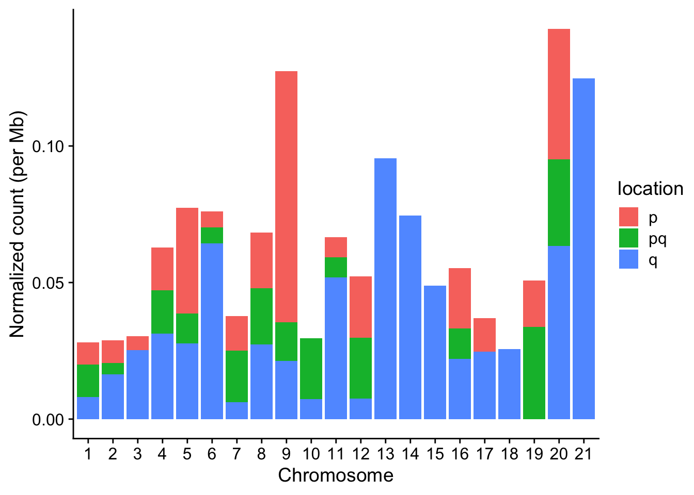

Chapter 9 Group Analysis and Visualization
Group analysis is a common task in cancer study. sigminer supports dividing samples into multiple groups and comparing genotype/phenotype feature measures.
9.1 Group Generation
There are multiple methods to generate groups, including ‘consensus’ (default, can be only used by result from sig_extract()), ‘k-means’ etc. After determining groups, sigminer will assign each group to a signature with maximum fraction. We may say a group is Sig_x enriched.
mt_grps <- get_groups(mt_sig, method = "consensus", match_consensus = TRUE)
#> => Obtaining clusters from the hierarchical clustering of the consensus matrix...
#> => Finding the dominant signature of each group...
#> => Generating a table of group and dominant signature:
#>
#> Sig1 Sig2 Sig3
#> 1 48 35 1
#> 2 13 11 30
#> 3 6 14 35
#> => Assigning a group to a signature with the maxium fraction (stored in 'map_table' attr)...
#> => Summarizing...
#> group #1: 84 samples with Sig1 enriched.
#> group #2: 54 samples with Sig3 enriched.
#> group #3: 55 samples with Sig3 enriched.
head(mt_grps)
#> sample group silhouette_width enrich_sig
#> 1: TCGA-AB-2922 1 0.1680 Sig1
#> 2: TCGA-AB-2816 1 0.1780 Sig1
#> 3: TCGA-AB-2972 1 0.2610 Sig1
#> 4: TCGA-AB-2854 1 0.0659 Sig1
#> 5: TCGA-AB-2847 1 0.0644 Sig1
#> 6: TCGA-AB-2843 1 0.0609 Sig1The returned sample orders match sample orders in clustered consensus matrix.

Sometimes, the mapping between groups and enriched signatures may not right. Users should check it and even correct it manually.